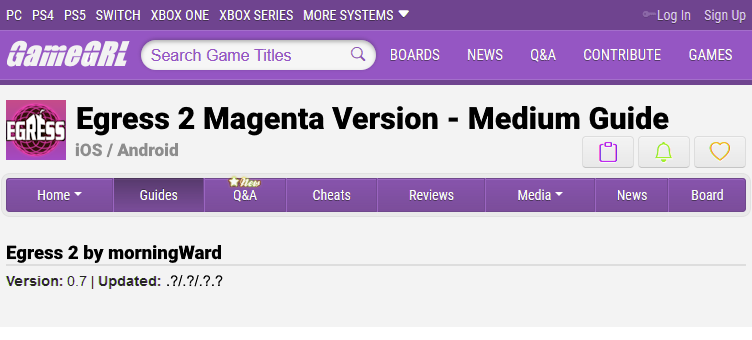

========
[21.7.0] LAND of GLYPHS and MIRAGE | FLOATING HEAD of [?]
========
OBDURYX is the last vulturling you need to convince, but an avian Verge Exile, DOVE [ORDERLY, CONTROLLING, GUILTY EX-SCOUT][WHEELER LIKE], cautions him not to reveal their hidden SHIMMER SIETCH. The headbird passionately believes in the Herald of Hope overcoming SIMURGH, and dismisses anyone else against all evidence. Funny Hope gag. The glyphs say the Herald has wings, and if you've lost yours, such as by faltering in the face of destiny when the idol distracts you*, you can't convince him. <"Some carry truth, but your dreams are only dreams">. If you've translated and traded enough glyphemes† to maintain persistant mirages and you're patient despite everything so far, he eventually tells you about the [FLOATING] [HEAD] of [?], where his ancient grandmother
🗨
aE: WHAT IS GRxNDMxTHER b^? |
mW: The one who bore the one who birthed you. |
mW: Like I told you about my nainai. |
mW: For an XM Herald of Hope it might be his ... A2 ;? |
aE: NxPE
long ago sought visions of the Herald.
The Head is a roaming aerolith, a cube pouring sand from grates, that you can see once you learn most of its glyphemes. I don't know the last glyph yet: my hypothesis is a personal name - but I was able to access it with a Linked dune elemental without a mirage dissolve. I brought my non-Honored muse Azræl
🗨
aZ: Hey, thanks. |
mW: It just means "no card".
to mazeskip with ;), his magic divination deck item, plus Charcoal and Fog to protect him. My collaborator in the other session joined over Rosetta chat.
🗨
aE: RZ INTERTWxND
----------------------------------
Dungeon size: Medium
Areas: at least 12
Themes: protection, illusion, [?]
----------------------------------
The wall + floor + ceiling murals indicate a goatling guild built this place to pour water in oases, jestling illusionists concealed‡ and fortified it later, and in the vultureling Dire Fading its waters turned to sand. Expect water temple sand flow manipulation, false walls and secret doors, and rotating cube faces. (Expect vertigo from surprise orientation shifts, and don't get buried!)
Make your way to the central sandbox hub, warding for phantom beaks. Tools like divination cards will help avoid false leads that go nowhere. You'll be on the right path when you see the [GLYPHSOME SANDS] outside the oasis through an exterior grille, where your ex used nodes in ways you'd never imagined. With the right aerial view, you should just now be realizing that the perpetual sandstreams she glitched into existance are surely an artistic response to the dustlike crystal Spray that killed her home, and the six-legged sandshapes rising-prancing dissolving in them aren't bullshit fantasy monsters but destriers, the animals she loved and feared and are forever gone. Try considering the depths of her interiority completely apart from your pasty self that you never knew and never will. This will hurt you because you are evil.
🗨
aZ: Do you want me to transcribe that in the FAQ, or.
* I am still Never Salty.
† See 21.6.1 for Herald of Hope LoGaM translation guide.
‡ From the chromatics, seemingly. the lore deepens! ;0